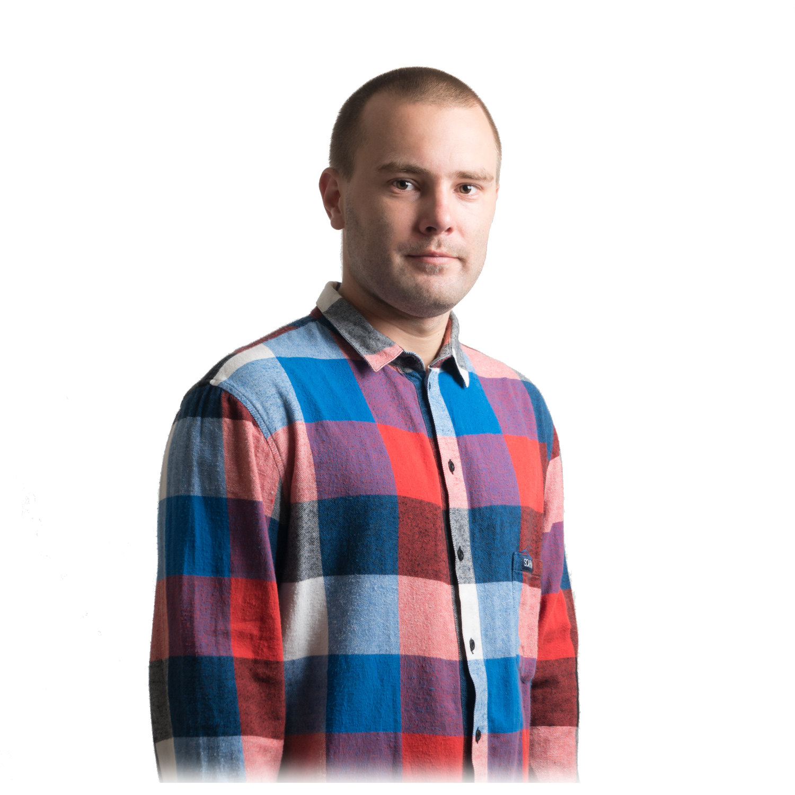

Om mig
Mitt namn är Daniel Andersson och jag bor tillsammans med min familj i Västerås. Tillsammans är vi fyra plus hund, Natasa min fru, Cerah min son, Hulu min dotter, Astrid vår hund och jag. Fritiden spenderar vi gärna tillsammans med vänner och familj på äventyr, små som stora i när och fjärran men det svåra är att hitta tiden just nu. I skrivande stund och framåt på obestämd tid kan man säga att vi är i stor färändringsfas för det bättre. Sedan Hulu kom till världen ganska nyligen har det varit mycket att anpassa sig till och jag kämpar för att vidareutbilda mig här genom BTH som webbprogrammerare på distans samtidigt som jag arbetar fulltid för att kunna försörja familjen. Nyligen började jag arbeta på ett företag där jag sköter lagervaror och blandar färger till krockade bilar som ska repareras mfl arbetsuppgifter. Det kanske inte är mitt drömyrke men det försörjer familjen just nu och ärligt talat har jag arbetat i mycket sämre miljöer.
Nu är tyvärr sesongen över men tillsammans med Cerah gillar jag att åka skateboard om det är tort i skateparken. Själv är jag ingen “die hard” skatare men vad gör man inte för att sina barn ska bevara intressen och hålla sig aktiva? Någon gång per år åker vi till stockholm för att testa någon av de olika skateparkerna som finns där men just nu står vi mitt emellan sessongerna och väntar på lite snö så vi ska kunna åka skidor och snowboard. Det har blivit substitutet för surf sedan vi flyttade till Sverige 2017. Förut bodde vi på Bali tillsammns och surfade mycket vilket är och förblir familjefavoriten.
Mitt namn är Mikael Roos. Född och uppvuxen i Bankeryd, Småland, strax utanför Jönköping, i ett villaområde som byggdes upp samtidigt som vi flyttade in där. Jag gillade landhockey och har spelat bandy och hockey samt gått bowlinggymnasiet i Nässjö. Jag har varit städare, diskare, kallskänka, servitör och kock. På ett bananskal landade jag i Ronneby när jag började högskolan 1990 där och nu är jag kvar med fru, barn och så vidare.
Mina hobbys är filmskapande, fotografering/redigering och annan kreativ sysselsättning och det är troligtvis det största intresset jag och min fru har gemensamt eftersom hon är otroligt kreativ med ett öga för stil, färg och form. Jag finner att även om mina intressen är åt det kreativa ligger fokus ofta på det tekniska där jag älskar att pilla och trixa till perfektionens ende som även kan arbeta mot mig till och från. Med det sagt så finns det få saker som slår känslan av att stå och skåda på ett nyligen slutfört projekt, oavsett medium eller tillvägagångssätt. Det må vara resan som är äventyret men resultatet är vad vi strävar efter så det är där man knyter ihop säcken och får.
I övrigt så är avsatt tid med min dotter för att se hennes utveckling något jag ständigt tänker på och det tar mig ofta ifrån nuet i tankarna när jag arbetar/studerar. Livet springer snabbare än någonsin och jag tycker att det känns som hon föddes igår men det är nu ca 9 månader. För ca en månad sedan gjorde hon ett tappert försök att ta sina första steg och nu väntar hela familjen på när hon kommer börja gå på riktigt.
Till och från får jag för mig att börja på lite hobbies, ett år satsade jag på pokerspel, ett annat år var det geocaching och sedan turfing. Nu ligger jag lågt med hobbies, men något kanske dyker upp...?
För framtiden hoppas jag på att klara av studierna eftersom det tillhör min högsta prio efter familjens välmående. Med en bättre utbildning hoppas jag på bättre möjligheter och arbetsförhållanden som kommer kunna ge mig och famlijen en bättre balans och mer tid tillsammans.
/ Daniel